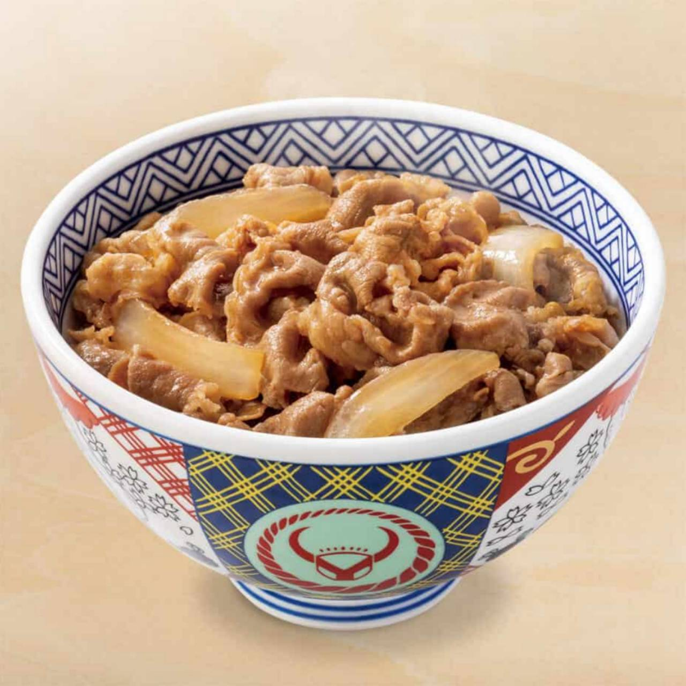
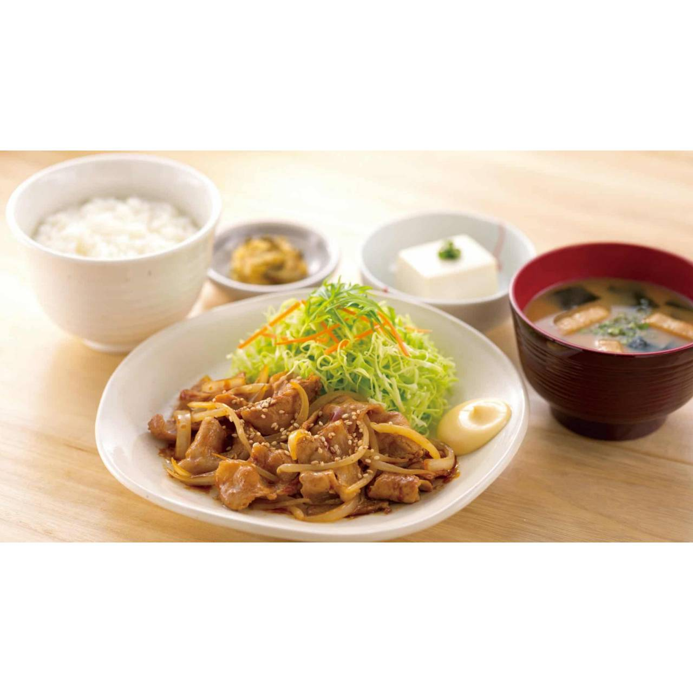
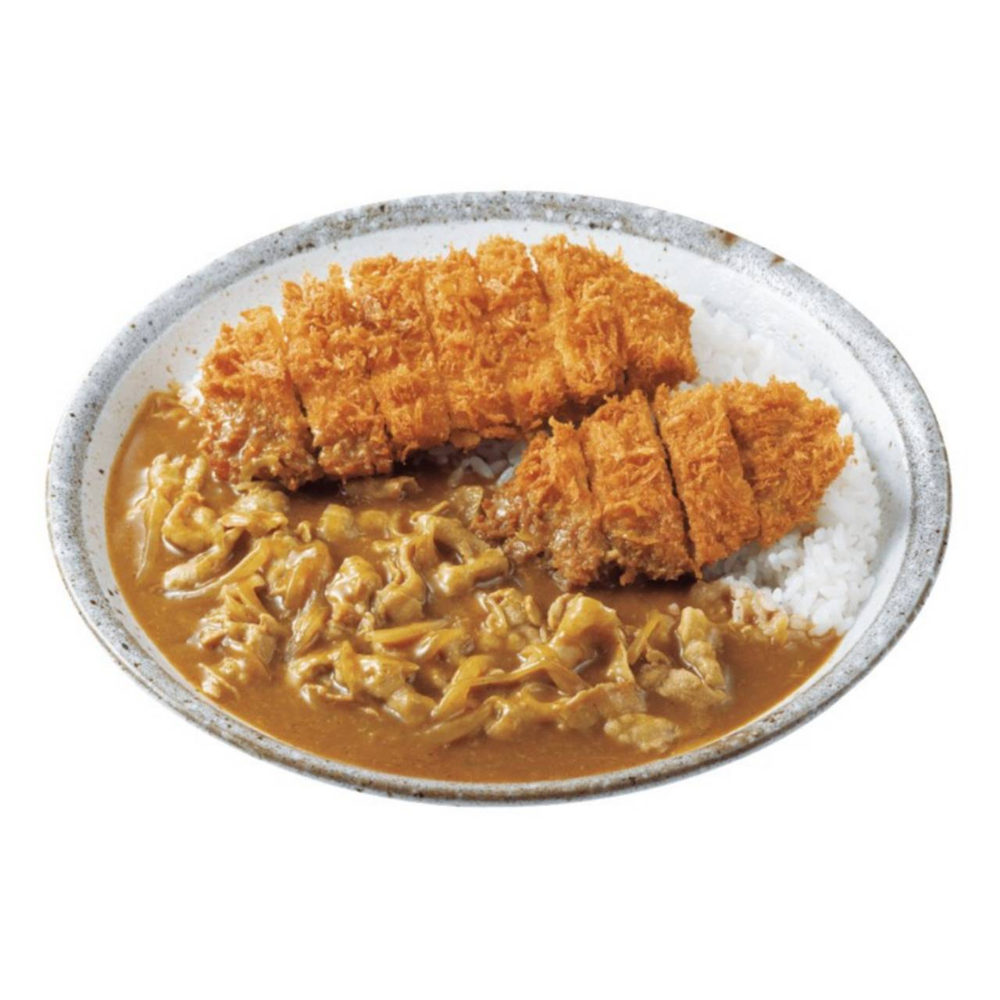

Food gallery
4 เชนร้านอาหารญี่ปุ่น ดังและสาขาแม่
เป็นเรื่องที่น่ายินดีสำหรับคนรักการกินอาหารญี่ปุ่นอย่างเราที่ทุกวันนี้ไม่ว่าจะเดินเข้าห้างหรือเข้าตามตรอกซอยใดก็มักจะเจอะเจอกับร้านอาหารญี่ปุ่น หลากหลายแบรนด์ ส่วนหนึ่งที่สะท้อนความสำเร็จของธุรกิจร้านอาหารญี่ปุ่นก็คือจำนวนสาขาที่ขยายไปในหลายพื้นที่ โดยคราวนี้เราจะแนะนำ เชนร้านอาหารญี่ปุ่น ที่โด่งดังในประเทศไทย แต่จะขอพาทุกคนวาร์ปไปกินสาขาแรกหรือสาขาแม่ในญี่ปุ่นแทน เผื่อไปเที่ยวญี่ปุ่นทริปหน้าทุกคนอยากจะลิ้มลองว่าร้านโปรดเหล่านี้มีส่วน เหมือนหรือต่างอย่างไรกับที่เราคุ้นเคยในไทยกัน

เริ่มกันที่ร้านข้าวหน้าเนื้อ (Gyudon) เมนูเรียบง่ายที่ราคาน่าคบและอยู่ท้องนั่นคือโยชิโนยะ ถือกำเนิดขึ้นในปี ค.ศ. 1899 ที่ตลาดปลาในย่านนิฮอนบาชิ (Nihonbashi) กรุงโตเกียว
พูดถึงร้านราเมนจากญี่ปุ่นที่คนไทยคุ้นเคยกันมากที่สุด คงปฏิเสธไม่ได้ว่าก็ต้องฮะจิบัง ราเมน แต่น้อยคนที่จะรู้ว่าต้นกำเนิดของฮะจิบังอยู่ที่เมืองชนบทอย่างเมืองคากะ (Kaga) ในจังหวัดอิชิกาวะ

สำหรับ เชนร้านอาหารญี่ปุ่น อย่างยาโยอิที่เราคุ้นเคยกันนั้น คนญี่ปุ่นจะเรียกว่า Yayoiken หรือป้ายหน้าร้านที่ญี่ปุ่นก็จะเขียนภาษาอังกฤษว่า Teishoku Yayoi ถือกำเนิดขึ้นใน ค.ศ. 1989 ที่จังหวัดฟุกุโอกะ

มาต่อกันที่ร้านข้าวราดแกงกะหรี่สไตล์ญี่ปุ่นที่ใครๆ ก็รู้จักอย่างโคโค่ อิฉิบันยะ จุดเด่นที่ไม่ว่าสาขาไหนในโลกเหมือนกันตามที่เราอยากกินได้ตามใจชอบ และมีจำนวนสาขามากที่สุดในประเทศญี่ปุ่น